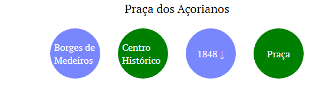

?
x
Como Jogar
Teste seu conhecimento dos pontos turísticos de Porto Alegre, você receberá dicas conforme o lugar que você selecionar. Por exemplo nesse caso você selecione a praça dos açorianos  Percebemos que o lugar é uma praça, é no bairro do Centro Histórico, mais velho do que 1848 e não é na rua Borges de Medeiros.